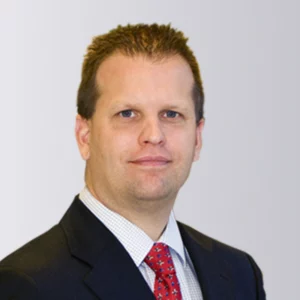
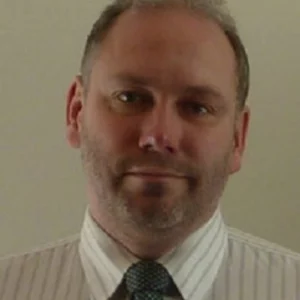

Kalvesten, Edvard & Rimskog, Magnus Abstract
Success in the World of One Product, One Process
Edvard Kälvesten, Founder, and Magnus Rimskog, Sales Director, Silex Microsystems
Silex has driven MEMS foundries’ progress from 4- to 6- to 8-inch wafer fabs, and remains a driving force in the industry’s development. The company has created hundreds of unique, tailored processes in the same fab, establishing it as a pioneering force in an industry otherwise typified by ‘one product, one process’.Edvard has had the privilege of counting Janusz Bryzek as a close industry colleague, the two
having first met when Edvard was presenting his groundbreaking MEMS medical pressure sensor work at a 1991 conference. They formed an immediate connection, and would work together many times over the following decades, with Dr. Bryzek engaging Silex’s services for multiple MEMS businesses. As a challenging and visionary customer, Dr. Janusz Bryzek directly contributed to Silex’s ongoing quest to reach ever greater heights.
Success in the World of One Product, One Process
Edvard Kälvesten, Founder, and Magnus Rimskog, Sales Director, Silex Microsystems
Silex has driven MEMS foundries’ progress from 4- to 6- to 8-inch wafer fabs, and remains a driving force in the industry’s development. The company has created hundreds of unique, tailored processes in the same fab, establishing it as a pioneering force in an industry otherwise typified by ‘one product, one process’.
Edvard has had the privilege of counting Janusz Bryzek as a close industry colleague, the two having first met when Edvard was presenting his groundbreaking MEMS medical pressure sensor work at a 1991 conference. They formed an immediate connection, and would work together many times over the following decades, with Dr. Bryzek engaging Silex’s services for multiple MEMS businesses. As a challenging and visionary customer, Dr. Janusz Bryzek directly contributed to Silex’s ongoing quest to reach ever greater heights.